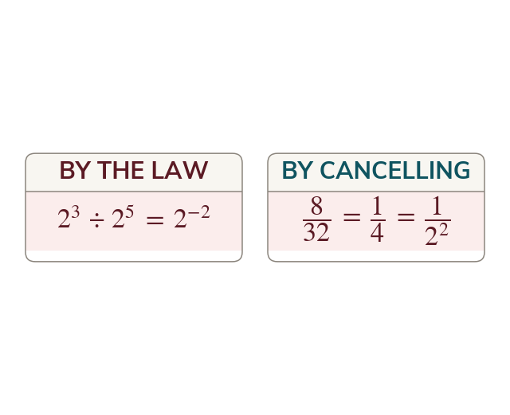

Where a negative index comes from
The division law turns into
Cancelling gives so means
Working out by the division law gives but cancelling the factors gives over
Both are right, so has to mean the reciprocal of
Both are right, so has to mean the reciprocal of